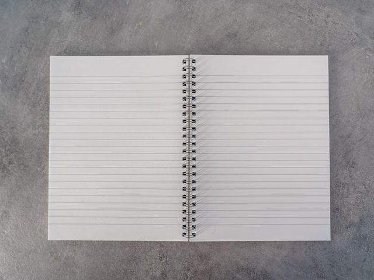
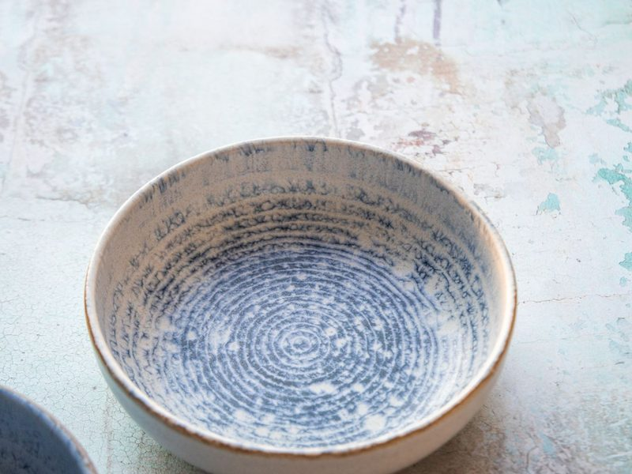
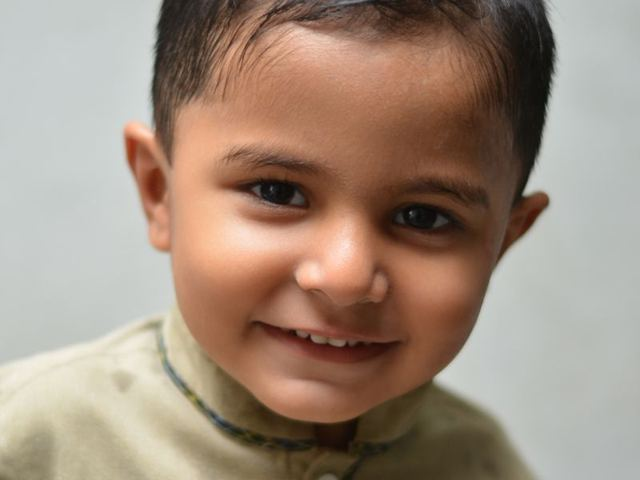
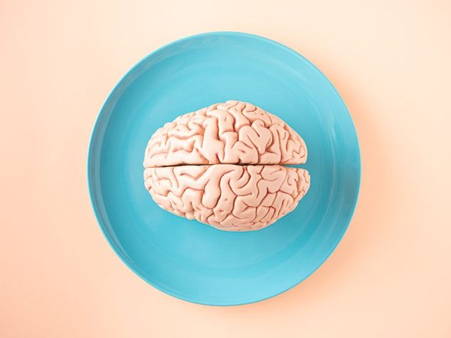

VOCABULARY · WORD UP 單字複習 UNIT 6
B-III．B 開頭（三）
WORD UP「B-III」的 33 個字（blank 到 brave）。紅色＝要複習，藍色標籤＝WORD UP 標熟記、還要在這裡考對。
共 33 個單字．點 🔊 聽發音

1blankadj./n.
空白的；空格
fill in the blanks 填空
Write your name in the blank.把你的名字寫在空格裡。

2blanketn.
毯子
It's cold. Do you need a blanket?好冷，你需要毯子嗎？
3blindadj.
瞎的；看不見的
The blind man walks with a guide dog.那位盲人帶著導盲犬走路。

4blockn./v.
街區；積木；擋住
two blocks away 兩條街外
The library is two blocks away.圖書館在兩條街外。

5bloodn.
血
不可數；bleed 流血
His knee was covered with blood.他的膝蓋都是血。
6blousen.
（女用）襯衫
She is wearing a white blouse.她穿著一件白色女襯衫。

7blowv.
吹
三態 blow-blew-blown
Make a wish and blow out the candles.許個願，然後吹熄蠟燭。

8blueadj./n.
藍色的；憂鬱的
feel blue 心情不好
The sky is blue today.今天天空是藍色的。

9boardn./v.
板子；登上（交通工具）
on board 在車／船／飛機上
Please write your answer on the board.請把答案寫在板子上。
10boatn.
船
by boat 搭船
We went to the island by boat.我們搭船去那座島。

11bodyn.
身體
複數 bodies
Exercise is good for your body.運動對身體好。

12boilv.
煮沸；水煮
boiled egg 水煮蛋
Boil the water before you drink it.水要煮沸再喝。
13bombn.
炸彈
b 不發音
The police found a bomb in the car.警察在車上發現一顆炸彈。

14bonen.
骨頭
The dog is chewing a bone.那隻狗在啃骨頭。

15bookn./v.
書；預訂
book a table 訂位
We booked a room at the hotel.我們訂了飯店的房間。

16bookcasen.
書櫃
= bookshelf
The bookcase is full of comics.書櫃裡都是漫畫。

17boredadj.
（人）感到無聊的
be bored with + 事
I'm bored. Let's go out.我好無聊，我們出去吧。

18boringadj.
（事物）無聊的
The movie was so boring.那部電影好無聊。
19bornadj.
出生的
be born in + 年／地點
I was born in 2012.我在 2012 年出生。
20borrowv.
借（入）
borrow A from B 向 B 借 A
Can I borrow your eraser?我可以借你的橡皮擦嗎？
21bossn.
老闆；上司
My mom's boss is very kind.我媽媽的老闆很好。
22bothadj./pron.
兩者都
both A and B
Both my parents are teachers.我爸媽兩個都是老師。
23botherv.
打擾；煩擾
Sorry to bother you. 抱歉打擾
Don't bother me. I'm studying.不要吵我，我在讀書。

24bottlen.
瓶子
a bottle of + 液體
I drink a bottle of water every day.我每天喝一瓶水。
25bottomn.
底部
top 頂端；at the bottom of
The answer is at the bottom of the page.答案在這頁的最下面。

26bowv./n.
鞠躬；弓；蝴蝶結
鞠躬唸 /baʊ/，弓、蝴蝶結唸 /boʊ/
The students bowed to the teacher.學生向老師鞠躬。

27bowln.
碗
a bowl of rice 一碗飯
I ate two bowls of rice.我吃了兩碗飯。
28bowlingn.
保齡球
go bowling 去打保齡球
Let's go bowling this weekend.我們這週末去打保齡球吧。
29boxn.
箱子；盒子
複數 boxes
There are toys in the box.盒子裡有玩具。

30boyn.
男孩
The boy is my little brother.那個男孩是我弟弟。

31brainn.
腦
Reading is good for your brain.閱讀對大腦很好。
32branchn.
樹枝；分店
A bird is sitting on the branch.一隻鳥停在樹枝上。
33braveadj.
勇敢的
bravery 勇氣
The brave boy saved the cat.那個勇敢的男孩救了貓。
FOCUS
常考片語
| 說法 | 中文 | 例子 |
|---|---|---|
| borrow A from B / lend A to B | 向 B 借 A ／ 把 A 借給 B | borrow a pen from Amy ／ lend a pen to Amy |
| be born in | 出生於（年、月、地點） | be born in Taipei |
| both A and B | A 和 B 兩個都 | both Tom and Ben |
| at the bottom of | 在…的底部 | at the bottom of the sea |
| blow out | 吹熄 | blow out the candles |
| go bowling | 去打保齡球 | go bowling with friends |
both A and B 當主詞時動詞用複數：Both Tom and Ben are tall.
FOCUS
容易搞混的字
| 字 | 用法 | 例子 |
|---|---|---|
| bored / boring | 人覺得無聊 ／ 事物很無聊 | I am bored. ／ The class is boring. |
| blank / blanket | 空格 ／ 毯子 | fill in the blank ／ a warm blanket |
| bowl / bowling | 碗 ／ 保齡球 | a bowl of soup ／ go bowling |
| book | 書（名詞）／ 預訂（動詞） | read a book ／ book a ticket |
| bow | 鞠躬 ／ 弓、蝴蝶結（唸法不同） | bow to the king ／ a red bow |